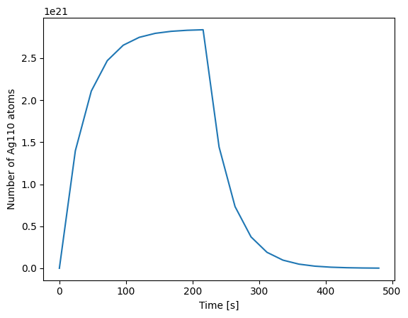

Full pulse schedule depletion simulation#
This example performs a depletion/transmutation/activation simulation
The simulation has been accelerated by making use of the IndependentOperator instead of the CoupledOperator.
This is an approximation so is less accurate but it is much faster.
This approach performs just a single transport simulation and obtains reactions rates once and assumes that they remain constant.
If the materials don’t change significantly during the irradiation this is a reasonable approximation.
Fission fuel pins would perhaps require the full CoupledOperator while the majority of fusion simulations are suitable for the IndependentOperator
More details on both Operators in the docs https://docs.openmc.org/en/stable/usersguide/depletion.html#transport-independent-depletion
# remove any old files
!rm settings.xm model.xml materials.xml geometry.xml settings.xml
import matplotlib.pyplot as plt
import openmc
import openmc.deplete
import math
from pathlib import Path
# Setting the cross section path to the correct location in the docker image.
# If you are running this outside the docker image you will have to change this path to your local cross section path.
openmc.config['cross_sections'] = Path.home() / 'nuclear_data' / 'cross_sections.xml'
# This chain file was downloaded using the download_endf_chain script that is included in the openmc_data package https://github.com/openmc-data-storage/openmc_data\n",
# this file tells openmc the decay paths between isotopes including probabilities of different routes and half lives
# To download this xml file you can run these commands
# pip install openmc_data
# download_endf_chain -d nuclear_data -r b8.0
openmc.config['chain_file'] = Path.home() / 'nuclear_data' / 'chain-endf-b8.0.xml'
rm: cannot remove 'settings.xm': No such file or directory
rm: cannot remove 'model.xml': No such file or directory
Creates a simple material which we will deplete
my_material = openmc.Material(material_id=1)
my_material.add_element('Ag', 1, percent_type='ao')
my_material.set_density('g/cm3', 10.49)
As we are doing a depletion simulation we must set the material volume and the .depletion to True
sphere_radius = 100
volume_of_sphere = (4/3) * math.pi * math.pow(sphere_radius, 3)
my_material.volume = volume_of_sphere # a volume is needed so openmc can find the number of atoms in the cell/material
my_material.depletable = True # depletable = True is needed to tell openmc to update the material with each time step
materials = openmc.Materials([my_material])
makes a simple sphere surface and cell
sph1 = openmc.Sphere(r=sphere_radius, boundary_type='vacuum')
shield_cell = openmc.Cell(region=-sph1)
shield_cell.fill = my_material
geometry = openmc.Geometry([shield_cell])
creates a simple point source
source = openmc.IndependentSource()
source.space = openmc.stats.Point((0, 0, 0))
source.angle = openmc.stats.Isotropic()
source.energy = openmc.stats.Discrete([14e6], [1])
source.particles = 'neutron'
defines the simulation settings
settings = openmc.Settings()
settings.batches = 10
settings.inactive = 0
settings.particles = 1000
settings.source = source
settings.run_mode = 'fixed source'
builds the model combining the materials, geometry and settings into one object
model = openmc.Model(geometry, materials, settings)
this does perform particle transport but just to get the flux and micro xs
flux_in_each_group, micro_xs = openmc.deplete.get_microxs_and_flux(
model=model,
domains=[shield_cell],
energies=[0, 30e6], # one energy bin from 0 to 30MeV
chain_file=openmc.config['chain_file'],
)
%%%%%%%%%%%%%%%
%%%%%%%%%%%%%%%%%%%%%%%%
%%%%%%%%%%%%%%%%%%%%%%%%%%%%%%
%%%%%%%%%%%%%%%%%%%%%%%%%%%%%%%%%%
%%%%%%%%%%%%%%%%%%%%%%%%%%%%%%%%%%%%%%
%%%%%%%%%%%%%%%%%%%%%%%%%%%%%%%%%%%%%%%%
%%%%%%%%%%%%%%%%%%%%%%%%
%%%%%%%%%%%%%%%%%%%%%%%%
############### %%%%%%%%%%%%%%%%%%%%%%%%
################## %%%%%%%%%%%%%%%%%%%%%%%
################### %%%%%%%%%%%%%%%%%%%%%%%
#################### %%%%%%%%%%%%%%%%%%%%%%
##################### %%%%%%%%%%%%%%%%%%%%%
###################### %%%%%%%%%%%%%%%%%%%%
####################### %%%%%%%%%%%%%%%%%%
####################### %%%%%%%%%%%%%%%%%
###################### %%%%%%%%%%%%%%%%%
#################### %%%%%%%%%%%%%%%%%
################# %%%%%%%%%%%%%%%%%
############### %%%%%%%%%%%%%%%%
############ %%%%%%%%%%%%%%%
######## %%%%%%%%%%%%%%
%%%%%%%%%%%
| The OpenMC Monte Carlo Code
Copyright | 2011-2025 MIT, UChicago Argonne LLC, and contributors
License | https://docs.openmc.org/en/latest/license.html
Version | 0.15.3-dev144
Commit Hash | 14ab4d3b6f3d77b73e8bb480782bbe1bdd56483d
Date/Time | 2025-06-13 16:16:12
OpenMP Threads | 16
Reading model XML file 'model.xml' ...
Reading chain file: /home/jon/nuclear_data/chain-endf-b8.0.xml...
Reading cross sections XML file...
Reading Ag107 from /home/jon/nuclear_data/neutron/Ag107.h5
Reading Ag109 from /home/jon/nuclear_data/neutron/Ag109.h5
Minimum neutron data temperature: 294.0 K
Maximum neutron data temperature: 294.0 K
Reading H1 from /home/jon/nuclear_data/neutron/H1.h5
Reading H2 from /home/jon/nuclear_data/neutron/H2.h5
Reading H3 from /home/jon/nuclear_data/neutron/H3.h5
Reading He3 from /home/jon/nuclear_data/neutron/He3.h5
Reading He4 from /home/jon/nuclear_data/neutron/He4.h5
Reading Li6 from /home/jon/nuclear_data/neutron/Li6.h5
Reading Li7 from /home/jon/nuclear_data/neutron/Li7.h5
Reading Be7 from /home/jon/nuclear_data/neutron/Be7.h5
Reading Be9 from /home/jon/nuclear_data/neutron/Be9.h5
Reading B10 from /home/jon/nuclear_data/neutron/B10.h5
Reading B11 from /home/jon/nuclear_data/neutron/B11.h5
Reading C12 from /home/jon/nuclear_data/neutron/C12.h5
Reading C13 from /home/jon/nuclear_data/neutron/C13.h5
Reading N14 from /home/jon/nuclear_data/neutron/N14.h5
Reading N15 from /home/jon/nuclear_data/neutron/N15.h5
Reading O16 from /home/jon/nuclear_data/neutron/O16.h5
Reading O17 from /home/jon/nuclear_data/neutron/O17.h5
Reading O18 from /home/jon/nuclear_data/neutron/O18.h5
Reading F19 from /home/jon/nuclear_data/neutron/F19.h5
Reading Ne20 from /home/jon/nuclear_data/neutron/Ne20.h5
Reading Ne21 from /home/jon/nuclear_data/neutron/Ne21.h5
Reading Ne22 from /home/jon/nuclear_data/neutron/Ne22.h5
Reading Na22 from /home/jon/nuclear_data/neutron/Na22.h5
WARNING: Negative value(s) found on probability table for nuclide Na22 at 250K
WARNING: Negative value(s) found on probability table for nuclide Na22 at 294K
WARNING: Negative value(s) found on probability table for nuclide Na22 at 600K
WARNING: Negative value(s) found on probability table for nuclide Na22 at 900K
WARNING: Negative value(s) found on probability table for nuclide Na22 at 1200K
WARNING: Negative value(s) found on probability table for nuclide Na22 at 2500K
Reading Na23 from /home/jon/nuclear_data/neutron/Na23.h5
Reading Mg24 from /home/jon/nuclear_data/neutron/Mg24.h5
Reading Mg25 from /home/jon/nuclear_data/neutron/Mg25.h5
Reading Mg26 from /home/jon/nuclear_data/neutron/Mg26.h5
Reading Al26_m1 from /home/jon/nuclear_data/neutron/Al26_m1.h5
Reading Al27 from /home/jon/nuclear_data/neutron/Al27.h5
Reading Si28 from /home/jon/nuclear_data/neutron/Si28.h5
Reading Si29 from /home/jon/nuclear_data/neutron/Si29.h5
Reading Si30 from /home/jon/nuclear_data/neutron/Si30.h5
Reading Si31 from /home/jon/nuclear_data/neutron/Si31.h5
Reading Si32 from /home/jon/nuclear_data/neutron/Si32.h5
Reading P31 from /home/jon/nuclear_data/neutron/P31.h5
Reading S32 from /home/jon/nuclear_data/neutron/S32.h5
Reading S33 from /home/jon/nuclear_data/neutron/S33.h5
Reading S34 from /home/jon/nuclear_data/neutron/S34.h5
Reading S35 from /home/jon/nuclear_data/neutron/S35.h5
Reading S36 from /home/jon/nuclear_data/neutron/S36.h5
Reading Cl35 from /home/jon/nuclear_data/neutron/Cl35.h5
Reading Cl36 from /home/jon/nuclear_data/neutron/Cl36.h5
Reading Cl37 from /home/jon/nuclear_data/neutron/Cl37.h5
Reading Ar36 from /home/jon/nuclear_data/neutron/Ar36.h5
WARNING: Negative value(s) found on probability table for nuclide Ar36 at 250K
WARNING: Negative value(s) found on probability table for nuclide Ar36 at 294K
WARNING: Negative value(s) found on probability table for nuclide Ar36 at 600K
WARNING: Negative value(s) found on probability table for nuclide Ar36 at 900K
WARNING: Negative value(s) found on probability table for nuclide Ar36 at 1200K
WARNING: Negative value(s) found on probability table for nuclide Ar36 at 2500K
Reading Ar37 from /home/jon/nuclear_data/neutron/Ar37.h5
Reading Ar38 from /home/jon/nuclear_data/neutron/Ar38.h5
Reading Ar39 from /home/jon/nuclear_data/neutron/Ar39.h5
Reading Ar40 from /home/jon/nuclear_data/neutron/Ar40.h5
Reading Ar41 from /home/jon/nuclear_data/neutron/Ar41.h5
Reading K39 from /home/jon/nuclear_data/neutron/K39.h5
Reading K40 from /home/jon/nuclear_data/neutron/K40.h5
Reading K41 from /home/jon/nuclear_data/neutron/K41.h5
Reading Ca40 from /home/jon/nuclear_data/neutron/Ca40.h5
Reading Ca41 from /home/jon/nuclear_data/neutron/Ca41.h5
Reading Ca42 from /home/jon/nuclear_data/neutron/Ca42.h5
Reading Ca43 from /home/jon/nuclear_data/neutron/Ca43.h5
Reading Ca44 from /home/jon/nuclear_data/neutron/Ca44.h5
Reading Ca45 from /home/jon/nuclear_data/neutron/Ca45.h5
Reading Ca46 from /home/jon/nuclear_data/neutron/Ca46.h5
Reading Ca47 from /home/jon/nuclear_data/neutron/Ca47.h5
Reading Ca48 from /home/jon/nuclear_data/neutron/Ca48.h5
Reading Sc45 from /home/jon/nuclear_data/neutron/Sc45.h5
Reading Ti46 from /home/jon/nuclear_data/neutron/Ti46.h5
Reading Ti47 from /home/jon/nuclear_data/neutron/Ti47.h5
Reading Ti48 from /home/jon/nuclear_data/neutron/Ti48.h5
Reading Ti49 from /home/jon/nuclear_data/neutron/Ti49.h5
Reading Ti50 from /home/jon/nuclear_data/neutron/Ti50.h5
Reading V49 from /home/jon/nuclear_data/neutron/V49.h5
Reading V50 from /home/jon/nuclear_data/neutron/V50.h5
Reading V51 from /home/jon/nuclear_data/neutron/V51.h5
Reading Cr50 from /home/jon/nuclear_data/neutron/Cr50.h5
Reading Cr51 from /home/jon/nuclear_data/neutron/Cr51.h5
Reading Cr52 from /home/jon/nuclear_data/neutron/Cr52.h5
Reading Cr53 from /home/jon/nuclear_data/neutron/Cr53.h5
Reading Cr54 from /home/jon/nuclear_data/neutron/Cr54.h5
Reading Mn54 from /home/jon/nuclear_data/neutron/Mn54.h5
Reading Mn55 from /home/jon/nuclear_data/neutron/Mn55.h5
Reading Fe54 from /home/jon/nuclear_data/neutron/Fe54.h5
Reading Fe55 from /home/jon/nuclear_data/neutron/Fe55.h5
Reading Fe56 from /home/jon/nuclear_data/neutron/Fe56.h5
Reading Fe57 from /home/jon/nuclear_data/neutron/Fe57.h5
Reading Fe58 from /home/jon/nuclear_data/neutron/Fe58.h5
Reading Co58 from /home/jon/nuclear_data/neutron/Co58.h5
Reading Co58_m1 from /home/jon/nuclear_data/neutron/Co58_m1.h5
Reading Co59 from /home/jon/nuclear_data/neutron/Co59.h5
Reading Ni58 from /home/jon/nuclear_data/neutron/Ni58.h5
Reading Ni59 from /home/jon/nuclear_data/neutron/Ni59.h5
Reading Ni60 from /home/jon/nuclear_data/neutron/Ni60.h5
Reading Ni61 from /home/jon/nuclear_data/neutron/Ni61.h5
Reading Ni62 from /home/jon/nuclear_data/neutron/Ni62.h5
Reading Ni63 from /home/jon/nuclear_data/neutron/Ni63.h5
Reading Ni64 from /home/jon/nuclear_data/neutron/Ni64.h5
Reading Cu63 from /home/jon/nuclear_data/neutron/Cu63.h5
Reading Cu64 from /home/jon/nuclear_data/neutron/Cu64.h5
Reading Cu65 from /home/jon/nuclear_data/neutron/Cu65.h5
Reading Zn64 from /home/jon/nuclear_data/neutron/Zn64.h5
Reading Zn65 from /home/jon/nuclear_data/neutron/Zn65.h5
Reading Zn66 from /home/jon/nuclear_data/neutron/Zn66.h5
Reading Zn67 from /home/jon/nuclear_data/neutron/Zn67.h5
Reading Zn68 from /home/jon/nuclear_data/neutron/Zn68.h5
Reading Zn69 from /home/jon/nuclear_data/neutron/Zn69.h5
Reading Zn70 from /home/jon/nuclear_data/neutron/Zn70.h5
Reading Ga69 from /home/jon/nuclear_data/neutron/Ga69.h5
Reading Ga70 from /home/jon/nuclear_data/neutron/Ga70.h5
Reading Ga71 from /home/jon/nuclear_data/neutron/Ga71.h5
Reading Ge70 from /home/jon/nuclear_data/neutron/Ge70.h5
Reading Ge71 from /home/jon/nuclear_data/neutron/Ge71.h5
Reading Ge72 from /home/jon/nuclear_data/neutron/Ge72.h5
Reading Ge73 from /home/jon/nuclear_data/neutron/Ge73.h5
Reading Ge74 from /home/jon/nuclear_data/neutron/Ge74.h5
Reading Ge75 from /home/jon/nuclear_data/neutron/Ge75.h5
Reading Ge76 from /home/jon/nuclear_data/neutron/Ge76.h5
Reading As73 from /home/jon/nuclear_data/neutron/As73.h5
Reading As74 from /home/jon/nuclear_data/neutron/As74.h5
Reading As75 from /home/jon/nuclear_data/neutron/As75.h5
Reading Se74 from /home/jon/nuclear_data/neutron/Se74.h5
Reading Se75 from /home/jon/nuclear_data/neutron/Se75.h5
Reading Se76 from /home/jon/nuclear_data/neutron/Se76.h5
Reading Se77 from /home/jon/nuclear_data/neutron/Se77.h5
Reading Se78 from /home/jon/nuclear_data/neutron/Se78.h5
Reading Se79 from /home/jon/nuclear_data/neutron/Se79.h5
WARNING: Negative value(s) found on probability table for nuclide Se79 at 250K
WARNING: Negative value(s) found on probability table for nuclide Se79 at 294K
WARNING: Negative value(s) found on probability table for nuclide Se79 at 600K
WARNING: Negative value(s) found on probability table for nuclide Se79 at 900K
WARNING: Negative value(s) found on probability table for nuclide Se79 at 1200K
Reading Se80 from /home/jon/nuclear_data/neutron/Se80.h5
Reading Se81 from /home/jon/nuclear_data/neutron/Se81.h5
Reading Se82 from /home/jon/nuclear_data/neutron/Se82.h5
Reading Br79 from /home/jon/nuclear_data/neutron/Br79.h5
Reading Br80 from /home/jon/nuclear_data/neutron/Br80.h5
Reading Br81 from /home/jon/nuclear_data/neutron/Br81.h5
Reading Kr78 from /home/jon/nuclear_data/neutron/Kr78.h5
Reading Kr79 from /home/jon/nuclear_data/neutron/Kr79.h5
Reading Kr80 from /home/jon/nuclear_data/neutron/Kr80.h5
Reading Kr81 from /home/jon/nuclear_data/neutron/Kr81.h5
Reading Kr82 from /home/jon/nuclear_data/neutron/Kr82.h5
Reading Kr83 from /home/jon/nuclear_data/neutron/Kr83.h5
Reading Kr84 from /home/jon/nuclear_data/neutron/Kr84.h5
Reading Kr85 from /home/jon/nuclear_data/neutron/Kr85.h5
Reading Kr86 from /home/jon/nuclear_data/neutron/Kr86.h5
Reading Rb85 from /home/jon/nuclear_data/neutron/Rb85.h5
Reading Rb86 from /home/jon/nuclear_data/neutron/Rb86.h5
Reading Rb87 from /home/jon/nuclear_data/neutron/Rb87.h5
Reading Sr84 from /home/jon/nuclear_data/neutron/Sr84.h5
Reading Sr85 from /home/jon/nuclear_data/neutron/Sr85.h5
Reading Sr86 from /home/jon/nuclear_data/neutron/Sr86.h5
Reading Sr87 from /home/jon/nuclear_data/neutron/Sr87.h5
Reading Sr88 from /home/jon/nuclear_data/neutron/Sr88.h5
Reading Sr89 from /home/jon/nuclear_data/neutron/Sr89.h5
Reading Sr90 from /home/jon/nuclear_data/neutron/Sr90.h5
Reading Y89 from /home/jon/nuclear_data/neutron/Y89.h5
Reading Y90 from /home/jon/nuclear_data/neutron/Y90.h5
Reading Y91 from /home/jon/nuclear_data/neutron/Y91.h5
Reading Zr90 from /home/jon/nuclear_data/neutron/Zr90.h5
Reading Zr91 from /home/jon/nuclear_data/neutron/Zr91.h5
Reading Zr92 from /home/jon/nuclear_data/neutron/Zr92.h5
Reading Zr93 from /home/jon/nuclear_data/neutron/Zr93.h5
Reading Zr94 from /home/jon/nuclear_data/neutron/Zr94.h5
Reading Zr95 from /home/jon/nuclear_data/neutron/Zr95.h5
Reading Zr96 from /home/jon/nuclear_data/neutron/Zr96.h5
WARNING: Negative value(s) found on probability table for nuclide Zr96 at 250K
WARNING: Negative value(s) found on probability table for nuclide Zr96 at 294K
WARNING: Negative value(s) found on probability table for nuclide Zr96 at 600K
WARNING: Negative value(s) found on probability table for nuclide Zr96 at 900K
WARNING: Negative value(s) found on probability table for nuclide Zr96 at 1200K
WARNING: Negative value(s) found on probability table for nuclide Zr96 at 2500K
Reading Nb93 from /home/jon/nuclear_data/neutron/Nb93.h5
Reading Nb94 from /home/jon/nuclear_data/neutron/Nb94.h5
WARNING: Negative value(s) found on probability table for nuclide Nb94 at 250K
WARNING: Negative value(s) found on probability table for nuclide Nb94 at 294K
WARNING: Negative value(s) found on probability table for nuclide Nb94 at 600K
WARNING: Negative value(s) found on probability table for nuclide Nb94 at 900K
WARNING: Negative value(s) found on probability table for nuclide Nb94 at 1200K
WARNING: Negative value(s) found on probability table for nuclide Nb94 at 2500K
Reading Nb95 from /home/jon/nuclear_data/neutron/Nb95.h5
WARNING: Negative value(s) found on probability table for nuclide Nb95 at 250K
WARNING: Negative value(s) found on probability table for nuclide Nb95 at 294K
WARNING: Negative value(s) found on probability table for nuclide Nb95 at 600K
WARNING: Negative value(s) found on probability table for nuclide Nb95 at 900K
WARNING: Negative value(s) found on probability table for nuclide Nb95 at 1200K
Reading Mo92 from /home/jon/nuclear_data/neutron/Mo92.h5
Reading Mo93 from /home/jon/nuclear_data/neutron/Mo93.h5
Reading Mo94 from /home/jon/nuclear_data/neutron/Mo94.h5
Reading Mo95 from /home/jon/nuclear_data/neutron/Mo95.h5
Reading Mo96 from /home/jon/nuclear_data/neutron/Mo96.h5
Reading Mo97 from /home/jon/nuclear_data/neutron/Mo97.h5
Reading Mo98 from /home/jon/nuclear_data/neutron/Mo98.h5
Reading Mo99 from /home/jon/nuclear_data/neutron/Mo99.h5
WARNING: Negative value(s) found on probability table for nuclide Mo99 at 250K
WARNING: Negative value(s) found on probability table for nuclide Mo99 at 294K
WARNING: Negative value(s) found on probability table for nuclide Mo99 at 600K
WARNING: Negative value(s) found on probability table for nuclide Mo99 at 900K
WARNING: Negative value(s) found on probability table for nuclide Mo99 at 1200K
WARNING: Negative value(s) found on probability table for nuclide Mo99 at 2500K
Reading Mo100 from /home/jon/nuclear_data/neutron/Mo100.h5
Reading Tc98 from /home/jon/nuclear_data/neutron/Tc98.h5
Reading Tc99 from /home/jon/nuclear_data/neutron/Tc99.h5
Reading Ru96 from /home/jon/nuclear_data/neutron/Ru96.h5
Reading Ru97 from /home/jon/nuclear_data/neutron/Ru97.h5
Reading Ru98 from /home/jon/nuclear_data/neutron/Ru98.h5
Reading Ru99 from /home/jon/nuclear_data/neutron/Ru99.h5
Reading Ru100 from /home/jon/nuclear_data/neutron/Ru100.h5
Reading Ru101 from /home/jon/nuclear_data/neutron/Ru101.h5
Reading Ru102 from /home/jon/nuclear_data/neutron/Ru102.h5
Reading Ru103 from /home/jon/nuclear_data/neutron/Ru103.h5
Reading Ru104 from /home/jon/nuclear_data/neutron/Ru104.h5
Reading Ru105 from /home/jon/nuclear_data/neutron/Ru105.h5
Reading Ru106 from /home/jon/nuclear_data/neutron/Ru106.h5
Reading Rh103 from /home/jon/nuclear_data/neutron/Rh103.h5
Reading Rh104 from /home/jon/nuclear_data/neutron/Rh104.h5
Reading Rh105 from /home/jon/nuclear_data/neutron/Rh105.h5
Reading Pd102 from /home/jon/nuclear_data/neutron/Pd102.h5
Reading Pd103 from /home/jon/nuclear_data/neutron/Pd103.h5
Reading Pd104 from /home/jon/nuclear_data/neutron/Pd104.h5
Reading Pd105 from /home/jon/nuclear_data/neutron/Pd105.h5
Reading Pd106 from /home/jon/nuclear_data/neutron/Pd106.h5
Reading Pd107 from /home/jon/nuclear_data/neutron/Pd107.h5
Reading Pd108 from /home/jon/nuclear_data/neutron/Pd108.h5
Reading Pd109 from /home/jon/nuclear_data/neutron/Pd109.h5
Reading Pd110 from /home/jon/nuclear_data/neutron/Pd110.h5
Reading Ag108 from /home/jon/nuclear_data/neutron/Ag108.h5
Reading Ag110_m1 from /home/jon/nuclear_data/neutron/Ag110_m1.h5
Reading Ag111 from /home/jon/nuclear_data/neutron/Ag111.h5
Reading Ag112 from /home/jon/nuclear_data/neutron/Ag112.h5
Reading Ag113 from /home/jon/nuclear_data/neutron/Ag113.h5
Reading Ag114 from /home/jon/nuclear_data/neutron/Ag114.h5
Reading Ag115 from /home/jon/nuclear_data/neutron/Ag115.h5
Reading Ag116 from /home/jon/nuclear_data/neutron/Ag116.h5
Reading Ag117 from /home/jon/nuclear_data/neutron/Ag117.h5
Reading Ag118_m1 from /home/jon/nuclear_data/neutron/Ag118_m1.h5
WARNING: Negative value(s) found on probability table for nuclide Ag118_m1 at
250K
WARNING: Negative value(s) found on probability table for nuclide Ag118_m1 at
294K
WARNING: Negative value(s) found on probability table for nuclide Ag118_m1 at
600K
WARNING: Negative value(s) found on probability table for nuclide Ag118_m1 at
900K
WARNING: Negative value(s) found on probability table for nuclide Ag118_m1 at
1200K
WARNING: Negative value(s) found on probability table for nuclide Ag118_m1 at
2500K
Reading Cd106 from /home/jon/nuclear_data/neutron/Cd106.h5
WARNING: Negative value(s) found on probability table for nuclide Cd106 at 250K
WARNING: Negative value(s) found on probability table for nuclide Cd106 at 294K
WARNING: Negative value(s) found on probability table for nuclide Cd106 at 600K
WARNING: Negative value(s) found on probability table for nuclide Cd106 at 900K
WARNING: Negative value(s) found on probability table for nuclide Cd106 at
1200K
WARNING: Negative value(s) found on probability table for nuclide Cd106 at
2500K
Reading Cd107 from /home/jon/nuclear_data/neutron/Cd107.h5
Reading Cd108 from /home/jon/nuclear_data/neutron/Cd108.h5
Reading Cd109 from /home/jon/nuclear_data/neutron/Cd109.h5
Reading Cd110 from /home/jon/nuclear_data/neutron/Cd110.h5
Reading Cd111 from /home/jon/nuclear_data/neutron/Cd111.h5
Reading Cd112 from /home/jon/nuclear_data/neutron/Cd112.h5
Reading Cd113 from /home/jon/nuclear_data/neutron/Cd113.h5
Reading Cd114 from /home/jon/nuclear_data/neutron/Cd114.h5
Reading Cd115_m1 from /home/jon/nuclear_data/neutron/Cd115_m1.h5
Reading Cd116 from /home/jon/nuclear_data/neutron/Cd116.h5
Reading In113 from /home/jon/nuclear_data/neutron/In113.h5
Reading In114 from /home/jon/nuclear_data/neutron/In114.h5
Reading In115 from /home/jon/nuclear_data/neutron/In115.h5
Reading Sn112 from /home/jon/nuclear_data/neutron/Sn112.h5
Reading Sn113 from /home/jon/nuclear_data/neutron/Sn113.h5
Reading Sn114 from /home/jon/nuclear_data/neutron/Sn114.h5
Reading Sn115 from /home/jon/nuclear_data/neutron/Sn115.h5
Reading Sn116 from /home/jon/nuclear_data/neutron/Sn116.h5
Reading Sn117 from /home/jon/nuclear_data/neutron/Sn117.h5
Reading Sn118 from /home/jon/nuclear_data/neutron/Sn118.h5
Reading Sn119 from /home/jon/nuclear_data/neutron/Sn119.h5
Reading Sn120 from /home/jon/nuclear_data/neutron/Sn120.h5
Reading Sn121_m1 from /home/jon/nuclear_data/neutron/Sn121_m1.h5
Reading Sn122 from /home/jon/nuclear_data/neutron/Sn122.h5
Reading Sn123 from /home/jon/nuclear_data/neutron/Sn123.h5
WARNING: Negative value(s) found on probability table for nuclide Sn123 at 250K
WARNING: Negative value(s) found on probability table for nuclide Sn123 at 294K
WARNING: Negative value(s) found on probability table for nuclide Sn123 at 600K
WARNING: Negative value(s) found on probability table for nuclide Sn123 at 900K
WARNING: Negative value(s) found on probability table for nuclide Sn123 at
1200K
WARNING: Negative value(s) found on probability table for nuclide Sn123 at
2500K
Reading Sn124 from /home/jon/nuclear_data/neutron/Sn124.h5
Reading Sn125 from /home/jon/nuclear_data/neutron/Sn125.h5
Reading Sn126 from /home/jon/nuclear_data/neutron/Sn126.h5
Reading Sb121 from /home/jon/nuclear_data/neutron/Sb121.h5
Reading Sb122 from /home/jon/nuclear_data/neutron/Sb122.h5
Reading Sb123 from /home/jon/nuclear_data/neutron/Sb123.h5
Reading Sb124 from /home/jon/nuclear_data/neutron/Sb124.h5
Reading Sb125 from /home/jon/nuclear_data/neutron/Sb125.h5
Reading Sb126 from /home/jon/nuclear_data/neutron/Sb126.h5
Reading Te120 from /home/jon/nuclear_data/neutron/Te120.h5
WARNING: Negative value(s) found on probability table for nuclide Te120 at 600K
WARNING: Negative value(s) found on probability table for nuclide Te120 at 900K
WARNING: Negative value(s) found on probability table for nuclide Te120 at
1200K
WARNING: Negative value(s) found on probability table for nuclide Te120 at
2500K
Reading Te121 from /home/jon/nuclear_data/neutron/Te121.h5
Reading Te121_m1 from /home/jon/nuclear_data/neutron/Te121_m1.h5
Reading Te122 from /home/jon/nuclear_data/neutron/Te122.h5
Reading Te123 from /home/jon/nuclear_data/neutron/Te123.h5
Reading Te124 from /home/jon/nuclear_data/neutron/Te124.h5
Reading Te125 from /home/jon/nuclear_data/neutron/Te125.h5
Reading Te126 from /home/jon/nuclear_data/neutron/Te126.h5
Reading Te127_m1 from /home/jon/nuclear_data/neutron/Te127_m1.h5
Reading Te128 from /home/jon/nuclear_data/neutron/Te128.h5
Reading Te129_m1 from /home/jon/nuclear_data/neutron/Te129_m1.h5
Reading Te130 from /home/jon/nuclear_data/neutron/Te130.h5
Reading Te131 from /home/jon/nuclear_data/neutron/Te131.h5
Reading Te131_m1 from /home/jon/nuclear_data/neutron/Te131_m1.h5
Reading Te132 from /home/jon/nuclear_data/neutron/Te132.h5
Reading I127 from /home/jon/nuclear_data/neutron/I127.h5
Reading I128 from /home/jon/nuclear_data/neutron/I128.h5
Reading I129 from /home/jon/nuclear_data/neutron/I129.h5
Reading I130 from /home/jon/nuclear_data/neutron/I130.h5
Reading I131 from /home/jon/nuclear_data/neutron/I131.h5
WARNING: Negative value(s) found on probability table for nuclide I131 at 250K
WARNING: Negative value(s) found on probability table for nuclide I131 at 294K
WARNING: Negative value(s) found on probability table for nuclide I131 at 600K
WARNING: Negative value(s) found on probability table for nuclide I131 at 900K
WARNING: Negative value(s) found on probability table for nuclide I131 at 1200K
WARNING: Negative value(s) found on probability table for nuclide I131 at 2500K
Reading I132 from /home/jon/nuclear_data/neutron/I132.h5
Reading I132_m1 from /home/jon/nuclear_data/neutron/I132_m1.h5
Reading I133 from /home/jon/nuclear_data/neutron/I133.h5
Reading I134 from /home/jon/nuclear_data/neutron/I134.h5
Reading I135 from /home/jon/nuclear_data/neutron/I135.h5
Reading Xe123 from /home/jon/nuclear_data/neutron/Xe123.h5
Reading Xe124 from /home/jon/nuclear_data/neutron/Xe124.h5
Reading Xe125 from /home/jon/nuclear_data/neutron/Xe125.h5
Reading Xe126 from /home/jon/nuclear_data/neutron/Xe126.h5
Reading Xe127 from /home/jon/nuclear_data/neutron/Xe127.h5
Reading Xe128 from /home/jon/nuclear_data/neutron/Xe128.h5
Reading Xe129 from /home/jon/nuclear_data/neutron/Xe129.h5
Reading Xe130 from /home/jon/nuclear_data/neutron/Xe130.h5
Reading Xe131 from /home/jon/nuclear_data/neutron/Xe131.h5
Reading Xe132 from /home/jon/nuclear_data/neutron/Xe132.h5
Reading Xe133 from /home/jon/nuclear_data/neutron/Xe133.h5
WARNING: Negative value(s) found on probability table for nuclide Xe133 at
2500K
Reading Xe134 from /home/jon/nuclear_data/neutron/Xe134.h5
Reading Xe135 from /home/jon/nuclear_data/neutron/Xe135.h5
Reading Xe136 from /home/jon/nuclear_data/neutron/Xe136.h5
Reading Cs133 from /home/jon/nuclear_data/neutron/Cs133.h5
Reading Cs134 from /home/jon/nuclear_data/neutron/Cs134.h5
Reading Cs135 from /home/jon/nuclear_data/neutron/Cs135.h5
Reading Cs136 from /home/jon/nuclear_data/neutron/Cs136.h5
WARNING: Negative value(s) found on probability table for nuclide Cs136 at 250K
WARNING: Negative value(s) found on probability table for nuclide Cs136 at 294K
WARNING: Negative value(s) found on probability table for nuclide Cs136 at 600K
WARNING: Negative value(s) found on probability table for nuclide Cs136 at 900K
WARNING: Negative value(s) found on probability table for nuclide Cs136 at
1200K
WARNING: Negative value(s) found on probability table for nuclide Cs136 at
2500K
Reading Cs137 from /home/jon/nuclear_data/neutron/Cs137.h5
Reading Ba130 from /home/jon/nuclear_data/neutron/Ba130.h5
Reading Ba131 from /home/jon/nuclear_data/neutron/Ba131.h5
Reading Ba132 from /home/jon/nuclear_data/neutron/Ba132.h5
Reading Ba133 from /home/jon/nuclear_data/neutron/Ba133.h5
Reading Ba134 from /home/jon/nuclear_data/neutron/Ba134.h5
Reading Ba135 from /home/jon/nuclear_data/neutron/Ba135.h5
Reading Ba136 from /home/jon/nuclear_data/neutron/Ba136.h5
Reading Ba137 from /home/jon/nuclear_data/neutron/Ba137.h5
Reading Ba138 from /home/jon/nuclear_data/neutron/Ba138.h5
Reading Ba139 from /home/jon/nuclear_data/neutron/Ba139.h5
Reading Ba140 from /home/jon/nuclear_data/neutron/Ba140.h5
Reading La138 from /home/jon/nuclear_data/neutron/La138.h5
Reading La139 from /home/jon/nuclear_data/neutron/La139.h5
Reading La140 from /home/jon/nuclear_data/neutron/La140.h5
Reading Ce136 from /home/jon/nuclear_data/neutron/Ce136.h5
Reading Ce137 from /home/jon/nuclear_data/neutron/Ce137.h5
Reading Ce137_m1 from /home/jon/nuclear_data/neutron/Ce137_m1.h5
Reading Ce138 from /home/jon/nuclear_data/neutron/Ce138.h5
Reading Ce139 from /home/jon/nuclear_data/neutron/Ce139.h5
Reading Ce140 from /home/jon/nuclear_data/neutron/Ce140.h5
Reading Ce141 from /home/jon/nuclear_data/neutron/Ce141.h5
Reading Ce142 from /home/jon/nuclear_data/neutron/Ce142.h5
Reading Ce143 from /home/jon/nuclear_data/neutron/Ce143.h5
Reading Ce144 from /home/jon/nuclear_data/neutron/Ce144.h5
Reading Pr141 from /home/jon/nuclear_data/neutron/Pr141.h5
Reading Pr142 from /home/jon/nuclear_data/neutron/Pr142.h5
Reading Pr143 from /home/jon/nuclear_data/neutron/Pr143.h5
Reading Nd142 from /home/jon/nuclear_data/neutron/Nd142.h5
Reading Nd143 from /home/jon/nuclear_data/neutron/Nd143.h5
Reading Nd144 from /home/jon/nuclear_data/neutron/Nd144.h5
Reading Nd145 from /home/jon/nuclear_data/neutron/Nd145.h5
Reading Nd146 from /home/jon/nuclear_data/neutron/Nd146.h5
Reading Nd147 from /home/jon/nuclear_data/neutron/Nd147.h5
Reading Nd148 from /home/jon/nuclear_data/neutron/Nd148.h5
Reading Nd149 from /home/jon/nuclear_data/neutron/Nd149.h5
Reading Nd150 from /home/jon/nuclear_data/neutron/Nd150.h5
Reading Pm143 from /home/jon/nuclear_data/neutron/Pm143.h5
Reading Pm144 from /home/jon/nuclear_data/neutron/Pm144.h5
Reading Pm145 from /home/jon/nuclear_data/neutron/Pm145.h5
Reading Pm146 from /home/jon/nuclear_data/neutron/Pm146.h5
Reading Pm147 from /home/jon/nuclear_data/neutron/Pm147.h5
Reading Pm148 from /home/jon/nuclear_data/neutron/Pm148.h5
Reading Pm148_m1 from /home/jon/nuclear_data/neutron/Pm148_m1.h5
Reading Pm149 from /home/jon/nuclear_data/neutron/Pm149.h5
Reading Pm150 from /home/jon/nuclear_data/neutron/Pm150.h5
Reading Pm151 from /home/jon/nuclear_data/neutron/Pm151.h5
Reading Sm144 from /home/jon/nuclear_data/neutron/Sm144.h5
Reading Sm145 from /home/jon/nuclear_data/neutron/Sm145.h5
Reading Sm146 from /home/jon/nuclear_data/neutron/Sm146.h5
Reading Sm147 from /home/jon/nuclear_data/neutron/Sm147.h5
Reading Sm148 from /home/jon/nuclear_data/neutron/Sm148.h5
Reading Sm149 from /home/jon/nuclear_data/neutron/Sm149.h5
Reading Sm150 from /home/jon/nuclear_data/neutron/Sm150.h5
Reading Sm151 from /home/jon/nuclear_data/neutron/Sm151.h5
Reading Sm152 from /home/jon/nuclear_data/neutron/Sm152.h5
Reading Sm153 from /home/jon/nuclear_data/neutron/Sm153.h5
Reading Sm154 from /home/jon/nuclear_data/neutron/Sm154.h5
Reading Eu151 from /home/jon/nuclear_data/neutron/Eu151.h5
Reading Eu152 from /home/jon/nuclear_data/neutron/Eu152.h5
Reading Eu153 from /home/jon/nuclear_data/neutron/Eu153.h5
Reading Eu154 from /home/jon/nuclear_data/neutron/Eu154.h5
Reading Eu155 from /home/jon/nuclear_data/neutron/Eu155.h5
Reading Eu156 from /home/jon/nuclear_data/neutron/Eu156.h5
WARNING: Negative value(s) found on probability table for nuclide Eu156 at 250K
WARNING: Negative value(s) found on probability table for nuclide Eu156 at 294K
WARNING: Negative value(s) found on probability table for nuclide Eu156 at 600K
WARNING: Negative value(s) found on probability table for nuclide Eu156 at 900K
WARNING: Negative value(s) found on probability table for nuclide Eu156 at
1200K
WARNING: Negative value(s) found on probability table for nuclide Eu156 at
2500K
Reading Eu157 from /home/jon/nuclear_data/neutron/Eu157.h5
Reading Gd152 from /home/jon/nuclear_data/neutron/Gd152.h5
Reading Gd153 from /home/jon/nuclear_data/neutron/Gd153.h5
Reading Gd154 from /home/jon/nuclear_data/neutron/Gd154.h5
Reading Gd155 from /home/jon/nuclear_data/neutron/Gd155.h5
Reading Gd156 from /home/jon/nuclear_data/neutron/Gd156.h5
Reading Gd157 from /home/jon/nuclear_data/neutron/Gd157.h5
Reading Gd158 from /home/jon/nuclear_data/neutron/Gd158.h5
Reading Gd159 from /home/jon/nuclear_data/neutron/Gd159.h5
Reading Gd160 from /home/jon/nuclear_data/neutron/Gd160.h5
Reading Tb158 from /home/jon/nuclear_data/neutron/Tb158.h5
Reading Tb159 from /home/jon/nuclear_data/neutron/Tb159.h5
Reading Tb160 from /home/jon/nuclear_data/neutron/Tb160.h5
Reading Tb161 from /home/jon/nuclear_data/neutron/Tb161.h5
Reading Dy154 from /home/jon/nuclear_data/neutron/Dy154.h5
Reading Dy155 from /home/jon/nuclear_data/neutron/Dy155.h5
Reading Dy156 from /home/jon/nuclear_data/neutron/Dy156.h5
Reading Dy157 from /home/jon/nuclear_data/neutron/Dy157.h5
Reading Dy158 from /home/jon/nuclear_data/neutron/Dy158.h5
Reading Dy159 from /home/jon/nuclear_data/neutron/Dy159.h5
Reading Dy160 from /home/jon/nuclear_data/neutron/Dy160.h5
Reading Dy161 from /home/jon/nuclear_data/neutron/Dy161.h5
Reading Dy162 from /home/jon/nuclear_data/neutron/Dy162.h5
Reading Dy163 from /home/jon/nuclear_data/neutron/Dy163.h5
Reading Dy164 from /home/jon/nuclear_data/neutron/Dy164.h5
Reading Ho165 from /home/jon/nuclear_data/neutron/Ho165.h5
Reading Ho166_m1 from /home/jon/nuclear_data/neutron/Ho166_m1.h5
Reading Er162 from /home/jon/nuclear_data/neutron/Er162.h5
Reading Er163 from /home/jon/nuclear_data/neutron/Er163.h5
Reading Er164 from /home/jon/nuclear_data/neutron/Er164.h5
Reading Er165 from /home/jon/nuclear_data/neutron/Er165.h5
Reading Er166 from /home/jon/nuclear_data/neutron/Er166.h5
Reading Er167 from /home/jon/nuclear_data/neutron/Er167.h5
Reading Er168 from /home/jon/nuclear_data/neutron/Er168.h5
Reading Er169 from /home/jon/nuclear_data/neutron/Er169.h5
Reading Er170 from /home/jon/nuclear_data/neutron/Er170.h5
Reading Tm168 from /home/jon/nuclear_data/neutron/Tm168.h5
Reading Tm169 from /home/jon/nuclear_data/neutron/Tm169.h5
Reading Tm170 from /home/jon/nuclear_data/neutron/Tm170.h5
Reading Tm171 from /home/jon/nuclear_data/neutron/Tm171.h5
Reading Yb168 from /home/jon/nuclear_data/neutron/Yb168.h5
WARNING: Negative value(s) found on probability table for nuclide Yb168 at 250K
WARNING: Negative value(s) found on probability table for nuclide Yb168 at 294K
WARNING: Negative value(s) found on probability table for nuclide Yb168 at 600K
WARNING: Negative value(s) found on probability table for nuclide Yb168 at 900K
WARNING: Negative value(s) found on probability table for nuclide Yb168 at
1200K
WARNING: Negative value(s) found on probability table for nuclide Yb168 at
2500K
Reading Yb169 from /home/jon/nuclear_data/neutron/Yb169.h5
Reading Yb170 from /home/jon/nuclear_data/neutron/Yb170.h5
WARNING: Negative value(s) found on probability table for nuclide Yb170 at 250K
WARNING: Negative value(s) found on probability table for nuclide Yb170 at 294K
WARNING: Negative value(s) found on probability table for nuclide Yb170 at 600K
WARNING: Negative value(s) found on probability table for nuclide Yb170 at 900K
WARNING: Negative value(s) found on probability table for nuclide Yb170 at
1200K
WARNING: Negative value(s) found on probability table for nuclide Yb170 at
2500K
Reading Yb171 from /home/jon/nuclear_data/neutron/Yb171.h5
WARNING: Negative value(s) found on probability table for nuclide Yb171 at 250K
WARNING: Negative value(s) found on probability table for nuclide Yb171 at 294K
WARNING: Negative value(s) found on probability table for nuclide Yb171 at 600K
WARNING: Negative value(s) found on probability table for nuclide Yb171 at 900K
WARNING: Negative value(s) found on probability table for nuclide Yb171 at
1200K
WARNING: Negative value(s) found on probability table for nuclide Yb171 at
2500K
Reading Yb172 from /home/jon/nuclear_data/neutron/Yb172.h5
WARNING: Negative value(s) found on probability table for nuclide Yb172 at 250K
WARNING: Negative value(s) found on probability table for nuclide Yb172 at 294K
WARNING: Negative value(s) found on probability table for nuclide Yb172 at 600K
WARNING: Negative value(s) found on probability table for nuclide Yb172 at 900K
WARNING: Negative value(s) found on probability table for nuclide Yb172 at
1200K
WARNING: Negative value(s) found on probability table for nuclide Yb172 at
2500K
Reading Yb173 from /home/jon/nuclear_data/neutron/Yb173.h5
WARNING: Negative value(s) found on probability table for nuclide Yb173 at 250K
WARNING: Negative value(s) found on probability table for nuclide Yb173 at 294K
WARNING: Negative value(s) found on probability table for nuclide Yb173 at 600K
WARNING: Negative value(s) found on probability table for nuclide Yb173 at 900K
WARNING: Negative value(s) found on probability table for nuclide Yb173 at
1200K
WARNING: Negative value(s) found on probability table for nuclide Yb173 at
2500K
Reading Yb174 from /home/jon/nuclear_data/neutron/Yb174.h5
WARNING: Negative value(s) found on probability table for nuclide Yb174 at 250K
WARNING: Negative value(s) found on probability table for nuclide Yb174 at 294K
WARNING: Negative value(s) found on probability table for nuclide Yb174 at 600K
WARNING: Negative value(s) found on probability table for nuclide Yb174 at 900K
WARNING: Negative value(s) found on probability table for nuclide Yb174 at
1200K
WARNING: Negative value(s) found on probability table for nuclide Yb174 at
2500K
Reading Yb175 from /home/jon/nuclear_data/neutron/Yb175.h5
Reading Yb176 from /home/jon/nuclear_data/neutron/Yb176.h5
WARNING: Negative value(s) found on probability table for nuclide Yb176 at 250K
WARNING: Negative value(s) found on probability table for nuclide Yb176 at 294K
WARNING: Negative value(s) found on probability table for nuclide Yb176 at 600K
WARNING: Negative value(s) found on probability table for nuclide Yb176 at 900K
WARNING: Negative value(s) found on probability table for nuclide Yb176 at
1200K
WARNING: Negative value(s) found on probability table for nuclide Yb176 at
2500K
Reading Lu175 from /home/jon/nuclear_data/neutron/Lu175.h5
Reading Lu176 from /home/jon/nuclear_data/neutron/Lu176.h5
Reading Hf174 from /home/jon/nuclear_data/neutron/Hf174.h5
Reading Hf175 from /home/jon/nuclear_data/neutron/Hf175.h5
Reading Hf176 from /home/jon/nuclear_data/neutron/Hf176.h5
Reading Hf177 from /home/jon/nuclear_data/neutron/Hf177.h5
Reading Hf178 from /home/jon/nuclear_data/neutron/Hf178.h5
Reading Hf179 from /home/jon/nuclear_data/neutron/Hf179.h5
Reading Hf180 from /home/jon/nuclear_data/neutron/Hf180.h5
Reading Hf181 from /home/jon/nuclear_data/neutron/Hf181.h5
WARNING: Negative value(s) found on probability table for nuclide Hf181 at 250K
WARNING: Negative value(s) found on probability table for nuclide Hf181 at 294K
WARNING: Negative value(s) found on probability table for nuclide Hf181 at 600K
WARNING: Negative value(s) found on probability table for nuclide Hf181 at 900K
WARNING: Negative value(s) found on probability table for nuclide Hf181 at
1200K
WARNING: Negative value(s) found on probability table for nuclide Hf181 at
2500K
Reading Hf182 from /home/jon/nuclear_data/neutron/Hf182.h5
WARNING: Negative value(s) found on probability table for nuclide Hf182 at 250K
WARNING: Negative value(s) found on probability table for nuclide Hf182 at 294K
WARNING: Negative value(s) found on probability table for nuclide Hf182 at 600K
WARNING: Negative value(s) found on probability table for nuclide Hf182 at 900K
WARNING: Negative value(s) found on probability table for nuclide Hf182 at
1200K
WARNING: Negative value(s) found on probability table for nuclide Hf182 at
2500K
Reading Ta180 from /home/jon/nuclear_data/neutron/Ta180.h5
Reading Ta181 from /home/jon/nuclear_data/neutron/Ta181.h5
Reading Ta182 from /home/jon/nuclear_data/neutron/Ta182.h5
Reading W180 from /home/jon/nuclear_data/neutron/W180.h5
Reading W181 from /home/jon/nuclear_data/neutron/W181.h5
Reading W182 from /home/jon/nuclear_data/neutron/W182.h5
Reading W183 from /home/jon/nuclear_data/neutron/W183.h5
Reading W184 from /home/jon/nuclear_data/neutron/W184.h5
Reading W185 from /home/jon/nuclear_data/neutron/W185.h5
Reading W186 from /home/jon/nuclear_data/neutron/W186.h5
Reading Re185 from /home/jon/nuclear_data/neutron/Re185.h5
Reading Re186_m1 from /home/jon/nuclear_data/neutron/Re186_m1.h5
Reading Re187 from /home/jon/nuclear_data/neutron/Re187.h5
Reading Os184 from /home/jon/nuclear_data/neutron/Os184.h5
Reading Os185 from /home/jon/nuclear_data/neutron/Os185.h5
Reading Os186 from /home/jon/nuclear_data/neutron/Os186.h5
Reading Os187 from /home/jon/nuclear_data/neutron/Os187.h5
Reading Os188 from /home/jon/nuclear_data/neutron/Os188.h5
Reading Os189 from /home/jon/nuclear_data/neutron/Os189.h5
Reading Os190 from /home/jon/nuclear_data/neutron/Os190.h5
Reading Os191 from /home/jon/nuclear_data/neutron/Os191.h5
Reading Os192 from /home/jon/nuclear_data/neutron/Os192.h5
Reading Ir191 from /home/jon/nuclear_data/neutron/Ir191.h5
Reading Ir192 from /home/jon/nuclear_data/neutron/Ir192.h5
Reading Ir193 from /home/jon/nuclear_data/neutron/Ir193.h5
Reading Ir194_m1 from /home/jon/nuclear_data/neutron/Ir194_m1.h5
Reading Pt190 from /home/jon/nuclear_data/neutron/Pt190.h5
Reading Pt191 from /home/jon/nuclear_data/neutron/Pt191.h5
Reading Pt192 from /home/jon/nuclear_data/neutron/Pt192.h5
Reading Pt193 from /home/jon/nuclear_data/neutron/Pt193.h5
Reading Pt194 from /home/jon/nuclear_data/neutron/Pt194.h5
Reading Pt195 from /home/jon/nuclear_data/neutron/Pt195.h5
Reading Pt196 from /home/jon/nuclear_data/neutron/Pt196.h5
Reading Pt197 from /home/jon/nuclear_data/neutron/Pt197.h5
Reading Pt198 from /home/jon/nuclear_data/neutron/Pt198.h5
Reading Au197 from /home/jon/nuclear_data/neutron/Au197.h5
Reading Hg196 from /home/jon/nuclear_data/neutron/Hg196.h5
Reading Hg197 from /home/jon/nuclear_data/neutron/Hg197.h5
Reading Hg197_m1 from /home/jon/nuclear_data/neutron/Hg197_m1.h5
Reading Hg198 from /home/jon/nuclear_data/neutron/Hg198.h5
Reading Hg199 from /home/jon/nuclear_data/neutron/Hg199.h5
Reading Hg200 from /home/jon/nuclear_data/neutron/Hg200.h5
Reading Hg201 from /home/jon/nuclear_data/neutron/Hg201.h5
Reading Hg202 from /home/jon/nuclear_data/neutron/Hg202.h5
Reading Hg203 from /home/jon/nuclear_data/neutron/Hg203.h5
Reading Hg204 from /home/jon/nuclear_data/neutron/Hg204.h5
Reading Tl203 from /home/jon/nuclear_data/neutron/Tl203.h5
Reading Tl204 from /home/jon/nuclear_data/neutron/Tl204.h5
Reading Tl205 from /home/jon/nuclear_data/neutron/Tl205.h5
Reading Pb204 from /home/jon/nuclear_data/neutron/Pb204.h5
Reading Pb205 from /home/jon/nuclear_data/neutron/Pb205.h5
Reading Pb206 from /home/jon/nuclear_data/neutron/Pb206.h5
Reading Pb207 from /home/jon/nuclear_data/neutron/Pb207.h5
Reading Pb208 from /home/jon/nuclear_data/neutron/Pb208.h5
Reading Bi209 from /home/jon/nuclear_data/neutron/Bi209.h5
Reading Bi210_m1 from /home/jon/nuclear_data/neutron/Bi210_m1.h5
Reading Po208 from /home/jon/nuclear_data/neutron/Po208.h5
Reading Po209 from /home/jon/nuclear_data/neutron/Po209.h5
Reading Po210 from /home/jon/nuclear_data/neutron/Po210.h5
Reading Ra223 from /home/jon/nuclear_data/neutron/Ra223.h5
Reading Ra224 from /home/jon/nuclear_data/neutron/Ra224.h5
Reading Ra225 from /home/jon/nuclear_data/neutron/Ra225.h5
Reading Ra226 from /home/jon/nuclear_data/neutron/Ra226.h5
Reading Ac225 from /home/jon/nuclear_data/neutron/Ac225.h5
Reading Ac226 from /home/jon/nuclear_data/neutron/Ac226.h5
Reading Ac227 from /home/jon/nuclear_data/neutron/Ac227.h5
Reading Th227 from /home/jon/nuclear_data/neutron/Th227.h5
Reading Th228 from /home/jon/nuclear_data/neutron/Th228.h5
Reading Th229 from /home/jon/nuclear_data/neutron/Th229.h5
Reading Th230 from /home/jon/nuclear_data/neutron/Th230.h5
Reading Th231 from /home/jon/nuclear_data/neutron/Th231.h5
Reading Th232 from /home/jon/nuclear_data/neutron/Th232.h5
Reading Th233 from /home/jon/nuclear_data/neutron/Th233.h5
Reading Th234 from /home/jon/nuclear_data/neutron/Th234.h5
Reading Pa229 from /home/jon/nuclear_data/neutron/Pa229.h5
Reading Pa230 from /home/jon/nuclear_data/neutron/Pa230.h5
Reading Pa231 from /home/jon/nuclear_data/neutron/Pa231.h5
Reading Pa232 from /home/jon/nuclear_data/neutron/Pa232.h5
Reading Pa233 from /home/jon/nuclear_data/neutron/Pa233.h5
Reading U230 from /home/jon/nuclear_data/neutron/U230.h5
Reading U231 from /home/jon/nuclear_data/neutron/U231.h5
Reading U232 from /home/jon/nuclear_data/neutron/U232.h5
Reading U233 from /home/jon/nuclear_data/neutron/U233.h5
Reading U234 from /home/jon/nuclear_data/neutron/U234.h5
Reading U235 from /home/jon/nuclear_data/neutron/U235.h5
Reading U236 from /home/jon/nuclear_data/neutron/U236.h5
Reading U237 from /home/jon/nuclear_data/neutron/U237.h5
Reading U238 from /home/jon/nuclear_data/neutron/U238.h5
Reading U239 from /home/jon/nuclear_data/neutron/U239.h5
Reading U240 from /home/jon/nuclear_data/neutron/U240.h5
Reading U241 from /home/jon/nuclear_data/neutron/U241.h5
Reading Np234 from /home/jon/nuclear_data/neutron/Np234.h5
Reading Np235 from /home/jon/nuclear_data/neutron/Np235.h5
Reading Np236 from /home/jon/nuclear_data/neutron/Np236.h5
Reading Np236_m1 from /home/jon/nuclear_data/neutron/Np236_m1.h5
Reading Np237 from /home/jon/nuclear_data/neutron/Np237.h5
Reading Np238 from /home/jon/nuclear_data/neutron/Np238.h5
Reading Np239 from /home/jon/nuclear_data/neutron/Np239.h5
Reading Pu236 from /home/jon/nuclear_data/neutron/Pu236.h5
Reading Pu237 from /home/jon/nuclear_data/neutron/Pu237.h5
Reading Pu238 from /home/jon/nuclear_data/neutron/Pu238.h5
Reading Pu239 from /home/jon/nuclear_data/neutron/Pu239.h5
Reading Pu240 from /home/jon/nuclear_data/neutron/Pu240.h5
Reading Pu241 from /home/jon/nuclear_data/neutron/Pu241.h5
Reading Pu242 from /home/jon/nuclear_data/neutron/Pu242.h5
Reading Pu243 from /home/jon/nuclear_data/neutron/Pu243.h5
Reading Pu244 from /home/jon/nuclear_data/neutron/Pu244.h5
Reading Pu245 from /home/jon/nuclear_data/neutron/Pu245.h5
Reading Pu246 from /home/jon/nuclear_data/neutron/Pu246.h5
Reading Am240 from /home/jon/nuclear_data/neutron/Am240.h5
Reading Am241 from /home/jon/nuclear_data/neutron/Am241.h5
Reading Am242 from /home/jon/nuclear_data/neutron/Am242.h5
Reading Am242_m1 from /home/jon/nuclear_data/neutron/Am242_m1.h5
Reading Am243 from /home/jon/nuclear_data/neutron/Am243.h5
Reading Am244 from /home/jon/nuclear_data/neutron/Am244.h5
Reading Am244_m1 from /home/jon/nuclear_data/neutron/Am244_m1.h5
Reading Cm240 from /home/jon/nuclear_data/neutron/Cm240.h5
Reading Cm241 from /home/jon/nuclear_data/neutron/Cm241.h5
Reading Cm242 from /home/jon/nuclear_data/neutron/Cm242.h5
Reading Cm243 from /home/jon/nuclear_data/neutron/Cm243.h5
Reading Cm244 from /home/jon/nuclear_data/neutron/Cm244.h5
Reading Cm245 from /home/jon/nuclear_data/neutron/Cm245.h5
Reading Cm246 from /home/jon/nuclear_data/neutron/Cm246.h5
Reading Cm247 from /home/jon/nuclear_data/neutron/Cm247.h5
Reading Cm248 from /home/jon/nuclear_data/neutron/Cm248.h5
Reading Cm249 from /home/jon/nuclear_data/neutron/Cm249.h5
Reading Cm250 from /home/jon/nuclear_data/neutron/Cm250.h5
Reading Bk245 from /home/jon/nuclear_data/neutron/Bk245.h5
Reading Bk246 from /home/jon/nuclear_data/neutron/Bk246.h5
Reading Bk247 from /home/jon/nuclear_data/neutron/Bk247.h5
Reading Bk248 from /home/jon/nuclear_data/neutron/Bk248.h5
Reading Bk249 from /home/jon/nuclear_data/neutron/Bk249.h5
Reading Bk250 from /home/jon/nuclear_data/neutron/Bk250.h5
Reading Cf246 from /home/jon/nuclear_data/neutron/Cf246.h5
Reading Cf247 from /home/jon/nuclear_data/neutron/Cf247.h5
Reading Cf248 from /home/jon/nuclear_data/neutron/Cf248.h5
Reading Cf249 from /home/jon/nuclear_data/neutron/Cf249.h5
Reading Cf250 from /home/jon/nuclear_data/neutron/Cf250.h5
WARNING: Negative value(s) found on probability table for nuclide Cf250 at 250K
WARNING: Negative value(s) found on probability table for nuclide Cf250 at 294K
WARNING: Negative value(s) found on probability table for nuclide Cf250 at 900K
WARNING: Negative value(s) found on probability table for nuclide Cf250 at
1200K
Reading Cf251 from /home/jon/nuclear_data/neutron/Cf251.h5
Reading Cf252 from /home/jon/nuclear_data/neutron/Cf252.h5
Reading Cf253 from /home/jon/nuclear_data/neutron/Cf253.h5
Reading Cf254 from /home/jon/nuclear_data/neutron/Cf254.h5
Reading Es251 from /home/jon/nuclear_data/neutron/Es251.h5
Reading Es252 from /home/jon/nuclear_data/neutron/Es252.h5
Reading Es253 from /home/jon/nuclear_data/neutron/Es253.h5
Reading Es254 from /home/jon/nuclear_data/neutron/Es254.h5
Reading Es254_m1 from /home/jon/nuclear_data/neutron/Es254_m1.h5
Reading Es255 from /home/jon/nuclear_data/neutron/Es255.h5
Reading Fm255 from /home/jon/nuclear_data/neutron/Fm255.h5
Preparing distributed cell instances...
Writing summary.h5 file...
Maximum neutron transport energy: 20000000.0 eV for Ag107
===============> FIXED SOURCE TRANSPORT SIMULATION <===============
Simulating batch 1
Simulating batch 2
Simulating batch 3
Simulating batch 4
Simulating batch 5
Simulating batch 6
Simulating batch 7
Simulating batch 8
Simulating batch 9
Simulating batch 10
Creating state point statepoint.10.h5...
=======================> TIMING STATISTICS <=======================
Total time for initialization = 1.1922e+02 seconds
Reading cross sections = 1.9851e-01 seconds
Total time in simulation = 1.1292e+02 seconds
Time in transport only = 1.1287e+02 seconds
Time in active batches = 1.1292e+02 seconds
Time accumulating tallies = 3.3433e-02 seconds
Time writing statepoints = 1.0617e-02 seconds
Total time for finalization = 1.9385e-02 seconds
Total time elapsed = 2.3300e+02 seconds
Calculation Rate (active) = 88.5616 particles/second
============================> RESULTS <============================
Leakage Fraction = 0.00010 +/- 0.00010
constructing the operator, note we pass in the flux and micro xs calculated earlier
operator = openmc.deplete.IndependentOperator(
materials=materials,
fluxes=[i[0] for i in flux_in_each_group],
micros=micro_xs,
reduce_chain_level=5,
normalization_mode="source-rate"
)
loading chain in TransportOperator
We define timesteps together with the source rate to make it clearer
timesteps_and_source_rates = [
(24, 1e20),
(24, 1e20),
(24, 1e20),
(24, 1e20),
(24, 1e20), # should saturate Ag110 here as it has been irradiated for over 5 halflives
(24, 1e20),
(24, 1e20),
(24, 1e20),
(24, 1e20),
(24, 0),
(24, 0),
(24, 0),
(24, 0),
(24, 0),
(24, 0),
(24, 0),
(24, 0),
(24, 0),
(24, 0),
(24, 0),
]
# Uses list Python comprehension to get the timesteps and source_rates separately
timesteps = [item[0] for item in timesteps_and_source_rates]
source_rates = [item[1] for item in timesteps_and_source_rates]
construct the integrator
integrator = openmc.deplete.PredictorIntegrator(
operator=operator,
timesteps=timesteps,
source_rates=source_rates,
timestep_units='s'
)
this runs the depltion calculations for the timesteps
integrator.integrate()
[openmc.deplete] t=0.0 s, dt=24 s, source=1e+20
[openmc.deplete] t=24.0 s, dt=24 s, source=1e+20
[openmc.deplete] t=48.0 s, dt=24 s, source=1e+20
[openmc.deplete] t=72.0 s, dt=24 s, source=1e+20
[openmc.deplete] t=96.0 s, dt=24 s, source=1e+20
[openmc.deplete] t=120.0 s, dt=24 s, source=1e+20
[openmc.deplete] t=144.0 s, dt=24 s, source=1e+20
[openmc.deplete] t=168.0 s, dt=24 s, source=1e+20
[openmc.deplete] t=192.0 s, dt=24 s, source=1e+20
[openmc.deplete] t=216.0 s, dt=24 s, source=0.0
/home/jon/.neutronicsworkshop/lib/python3.11/site-packages/uncertainties/core.py:1024: UserWarning: Using UFloat objects with std_dev==0 may give unexpected results.
warn("Using UFloat objects with std_dev==0 may give unexpected results.")
[openmc.deplete] t=240.0 s, dt=24 s, source=0.0
[openmc.deplete] t=264.0 s, dt=24 s, source=0.0
[openmc.deplete] t=288.0 s, dt=24 s, source=0.0
[openmc.deplete] t=312.0 s, dt=24 s, source=0.0
[openmc.deplete] t=336.0 s, dt=24 s, source=0.0
[openmc.deplete] t=360.0 s, dt=24 s, source=0.0
[openmc.deplete] t=384.0 s, dt=24 s, source=0.0
[openmc.deplete] t=408.0 s, dt=24 s, source=0.0
[openmc.deplete] t=432.0 s, dt=24 s, source=0.0
[openmc.deplete] t=456.0 s, dt=24 s, source=0.0
[openmc.deplete] t=480.0 (final operator evaluation)
Loads up the results
results = openmc.deplete.Results("depletion_results.h5")
Gets the material from the 2nd timestep and shows the composition
second_time_step = results[2]
second_time_step.get_material('1')
Material
ID = 1
Name =
Temperature = None
Density = None [sum]
Volume = 4188790.2047863905 [cm^3]
Depletable = False
S(a,b) Tables
Nuclides
H1 = 1.4173792678258947e-11 [ao]
H2 = 4.103343439602123e-21 [ao]
H3 = 2.080355767997663e-23 [ao]
He3 = 2.813547939791026e-27 [ao]
He4 = 3.05921386444375e-12 [ao]
Br81 = 1.8709289338567234e-89 [ao]
Br82 = 4.226823137774037e-83 [ao]
Br83 = 1.862268184017414e-74 [ao]
Br84 = 3.282299539203446e-71 [ao]
Kr83 = 3.480154278819653e-80 [ao]
Kr84 = 3.8543219527783744e-73 [ao]
Kr85 = 1.5088507820539706e-69 [ao]
Kr86 = 4.278974676326127e-68 [ao]
Kr87 = 4.647973083143428e-68 [ao]
Rb83 = 0.0 [ao]
Rb84 = 4.7997427602509565e-85 [ao]
Rb85 = 2.81588952058743e-76 [ao]
Rb86 = 2.3213660393561137e-68 [ao]
Rb86_m1 = 4.84853735403002e-86 [ao]
Rb87 = 6.352617945369233e-60 [ao]
Rb88 = 4.856714400185158e-59 [ao]
Rb89 = 1.804515623063052e-67 [ao]
Rb90 = 4.3816921976267846e-67 [ao]
Rb91 = 0.0 [ao]
Sr85 = 2.1294190595578056e-81 [ao]
Sr86 = 1.6376673996615408e-72 [ao]
Sr87 = 1.2926726678872229e-65 [ao]
Sr88 = 5.4867463991036295e-58 [ao]
Sr89 = 6.580907248584156e-57 [ao]
Sr90 = 1.9518803349263588e-56 [ao]
Sr91 = 2.7026408097697445e-56 [ao]
Sr92 = 1.4409631550567255e-53 [ao]
Sr93 = 1.475890390948971e-52 [ao]
Y88 = 1.3723798519902528e-69 [ao]
Y89 = 7.682815590286264e-61 [ao]
Y89_m1 = 5.552479693700908e-67 [ao]
Y90 = 2.040697688560606e-55 [ao]
Y90_m1 = 1.8413066235982723e-72 [ao]
Y91 = 7.380356507803306e-48 [ao]
Y91_m1 = 2.2644382639928468e-60 [ao]
Y92 = 3.5362224512516745e-47 [ao]
Y93 = 1.266626635954633e-54 [ao]
Y94 = 3.4783467969816125e-56 [ao]
Y95 = 8.832386359005713e-56 [ao]
Y96 = 3.807987726360228e-53 [ao]
Zr88 = 7.896903487696174e-77 [ao]
Zr89 = 9.636775901583235e-68 [ao]
Zr90 = 5.609344560973221e-59 [ao]
Zr90_m1 = 2.0758944808777006e-81 [ao]
Zr91 = 7.671129608251385e-53 [ao]
Zr92 = 1.0360268810565197e-46 [ao]
Zr93 = 1.3191386743794333e-45 [ao]
Zr94 = 3.4023208457663505e-45 [ao]
Zr95 = 4.4776088502990205e-45 [ao]
Zr96 = 1.0101706615910393e-40 [ao]
Zr97 = 2.4328490663636167e-39 [ao]
Nb90 = 2.3200793705268616e-81 [ao]
Nb91 = 8.132880568887141e-70 [ao]
Nb92 = 3.969738857173991e-60 [ao]
Nb93 = 1.3149918399576081e-51 [ao]
Nb93_m1 = 1.5312510973480564e-58 [ao]
Nb94 = 4.0294905465063555e-44 [ao]
Nb94_m1 = 1.6443318935017503e-60 [ao]
Nb95 = 3.0389956597525574e-36 [ao]
Nb95_m1 = 5.528137520046613e-53 [ao]
Nb96 = 1.763856245384711e-35 [ao]
Nb97 = 4.387217423549027e-44 [ao]
Nb97_m1 = 2.4009316154657056e-43 [ao]
Nb98 = 2.841757090229056e-42 [ao]
Nb99 = 8.50198788348951e-42 [ao]
Nb100 = 2.7043709227802013e-40 [ao]
Mo91 = 8.566798409949864e-74 [ao]
Mo92 = 3.435650838224703e-64 [ao]
Mo93 = 2.0170361924532888e-56 [ao]
Mo94 = 2.798980281688804e-49 [ao]
Mo95 = 1.5786890407069683e-41 [ao]
Mo96 = 4.6131849289584787e-35 [ao]
Mo97 = 1.9026900016416082e-34 [ao]
Mo98 = 3.4135504646038505e-34 [ao]
Mo99 = 2.5302688161269336e-34 [ao]
Mo100 = 3.894272366898337e-28 [ao]
Mo101 = 1.4583495823839977e-26 [ao]
Mo102 = 4.200106588091475e-34 [ao]
Mo103 = 8.648823353881942e-35 [ao]
Tc94 = 3.1303790858184634e-68 [ao]
Tc95 = 2.7208935212927572e-59 [ao]
Tc96 = 5.913591223342633e-53 [ao]
Tc97 = 1.956319451446197e-41 [ao]
Tc97_m1 = 8.053728293382138e-54 [ao]
Tc98 = 4.768181527070994e-33 [ao]
Tc99 = 9.089295525771019e-25 [ao]
Tc99_m1 = 7.45665787601458e-39 [ao]
Tc100 = 6.156193051456264e-24 [ao]
Tc101 = 6.546312611221287e-23 [ao]
Tc102 = 3.4879250984531453e-25 [ao]
Tc103 = 3.3914190598541224e-28 [ao]
Tc104 = 3.9931355563446187e-26 [ao]
Tc105 = 9.613175736173694e-34 [ao]
Tc106 = 4.0170263351006645e-34 [ao]
Ru94 = 0.0 [ao]
Ru95 = 3.2649476552928217e-63 [ao]
Ru96 = 2.3283340816560878e-54 [ao]
Ru97 = 8.250893294432753e-46 [ao]
Ru98 = 7.58955333815499e-39 [ao]
Ru99 = 1.0730429168374535e-30 [ao]
Ru100 = 6.932796876121783e-24 [ao]
Ru101 = 1.3080052440562348e-23 [ao]
Ru102 = 1.1289174668169412e-23 [ao]
Ru103 = 1.0143443764837603e-22 [ao]
Ru104 = 1.9858588085019923e-15 [ao]
Ru105 = 3.333810405135368e-23 [ao]
Ru106 = 4.9241587672432035e-23 [ao]
Ru107 = 1.0437529972034617e-24 [ao]
Rh100 = 0.0 [ao]
Rh101 = 9.74986499103934e-38 [ao]
Rh101_m1 = 1.1248646096790819e-40 [ao]
Rh102 = 1.510891251728781e-21 [ao]
Rh103 = 2.032110195652412e-13 [ao]
Rh103_m1 = 1.3435716152550272e-26 [ao]
Rh104 = 9.93238245953149e-13 [ao]
Rh104_m1 = 2.3840523233604293e-22 [ao]
Rh105 = 8.601438005809129e-14 [ao]
Rh105_m1 = 4.7827733566174605e-27 [ao]
Rh106 = 8.077773714970033e-13 [ao]
Rh106_m1 = 1.2955775962177664e-22 [ao]
Rh107 = 1.0044616126374111e-21 [ao]
Rh108 = 2.325215081119567e-22 [ao]
Rh109 = 8.94042186917861e-23 [ao]
Rh110 = 5.692775619411923e-24 [ao]
Pd100 = 0.0 [ao]
Pd101 = 5.196667231751165e-37 [ao]
Pd102 = 2.1497006770590124e-28 [ao]
Pd103 = 2.2448409315050935e-21 [ao]
Pd104 = 4.3931605178000335e-13 [ao]
Pd105 = 1.1297251944029425e-17 [ao]
Pd106 = 7.844553023788572e-12 [ao]
Pd107 = 5.2454555425320955e-12 [ao]
Pd107_m1 = 1.1847719201135284e-21 [ao]
Pd108 = 6.846215262826279e-12 [ao]
Pd109 = 4.64317816286718e-12 [ao]
Pd109_m1 = 6.454627469630436e-22 [ao]
Pd110 = 1.2446992899428729e-12 [ao]
Pd111 = 2.9304917053066318e-21 [ao]
Pd111_m1 = 5.159033299073089e-22 [ao]
Pd112 = 3.384153162214307e-37 [ao]
Pd113 = 1.3162426921094177e-45 [ao]
Ag104 = 1.9634471464064956e-41 [ao]
Ag105 = 9.281720480758913e-37 [ao]
Ag106 = 4.54662156729678e-10 [ao]
Ag107 = 0.03035916021628349 [ao]
Ag107_m1 = 1.7417647495887417e-22 [ao]
Ag108 = 1.3343277768984442e-09 [ao]
Ag108_m1 = 1.2192837434347786e-11 [ao]
Ag109 = 0.02820516437717281 [ao]
Ag109_m1 = 1.2055307377595086e-15 [ao]
Ag110 = 5.03383773799856e-10 [ao]
Ag110_m1 = 4.4979448784252027e-11 [ao]
Ag111 = 3.903919219615534e-18 [ao]
Ag111_m1 = 1.6544500968826673e-23 [ao]
Ag112 = 1.7976600081975653e-26 [ao]
Ag113 = 2.5837107873249966e-34 [ao]
Ag114 = 4.8119248243677265e-43 [ao]
Cd104 = 0.0 [ao]
Cd105 = 3.5996053793001e-36 [ao]
Cd106 = 1.9373132746792983e-27 [ao]
Cd107 = 5.598716324795625e-19 [ao]
Cd108 = 1.567350016630106e-10 [ao]
Cd109 = 3.319340106828376e-18 [ao]
Cd110 = 4.136550689272483e-10 [ao]
Cd111 = 2.036214943376607e-18 [ao]
Cd111_m1 = 1.3099719376069718e-20 [ao]
Cd112 = 2.101477355610324e-26 [ao]
Cd113 = 5.100656618704675e-35 [ao]
Cd113_m1 = 7.697437645302609e-36 [ao]
prints the atoms of Ag110 in a table for reach time step
times, number_of_Ag110_atoms = results.get_atoms(my_material, 'Ag110')
for time, num in zip(times, number_of_Ag110_atoms):
print(f" Time {time}s. Number of Ag110 atoms {num}")
Time 0.0s. Number of Ag110 atoms 0.0
Time 24.0s. Number of Ag110 atoms 1.397768836254115e+21
Time 48.0s. Number of Ag110 atoms 2.108569020941245e+21
Time 72.0s. Number of Ag110 atoms 2.4700285599007003e+21
Time 96.0s. Number of Ag110 atoms 2.6538396916452913e+21
Time 120.0s. Number of Ag110 atoms 2.7473121898185265e+21
Time 144.0s. Number of Ag110 atoms 2.794845245902281e+21
Time 168.0s. Number of Ag110 atoms 2.819016953069636e+21
Time 192.0s. Number of Ag110 atoms 2.8313088332654355e+21
Time 216.0s. Number of Ag110 atoms 2.8375595259690746e+21
Time 240.0s. Number of Ag110 atoms 1.4429696018255155e+21
Time 264.0s. Number of Ag110 atoms 7.337859388485763e+20
Time 288.0s. Number of Ag110 atoms 3.7314840725142615e+20
Time 312.0s. Number of Ag110 atoms 1.8975525257759038e+20
Time 336.0s. Number of Ag110 atoms 9.649527203071764e+19
Time 360.0s. Number of Ag110 atoms 4.907025233970541e+19
Time 384.0s. Number of Ag110 atoms 2.4953450261211464e+19
Time 408.0s. Number of Ag110 atoms 1.2689456565841609e+19
Time 432.0s. Number of Ag110 atoms 6.452910738969547e+18
Time 456.0s. Number of Ag110 atoms 3.281472069248963e+18
Time 480.0s. Number of Ag110 atoms 1.668716624965008e+18
# plots the number of atoms as a function of time
plt.plot(times, number_of_Ag110_atoms)
plt.xlabel('Time [s]')
plt.ylabel('Number of Ag110 atoms')
plt.show()
